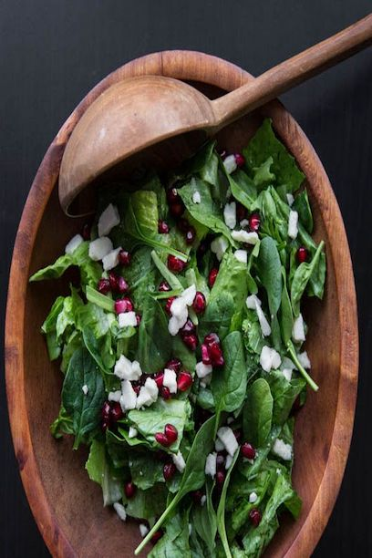

Spinach Pomegranate Salad

Description
Do you like spinach, pomegranate, and feta cheese? Well, you've arrived to the right recipe!
Ingredients
- 1 (10 ounce) bag baby spinach leaves, rinsed and drained
- ½ cup walnut pieces
- ½ cup crumbled feta
- ¼ medium red onion, sliced very thin
- ¼ cup alfalfa sprouts (Optional)
- ½ cup pomegranate seeds, or to taste
- 4 tablespoons balsamic vinaigrette
Steps
- Place spinach into a salad bowl.
- Top with walnuts, feta, red onion, alfalfa sprouts, and pomegranate seeds.
- Drizzle with vinaigrette.